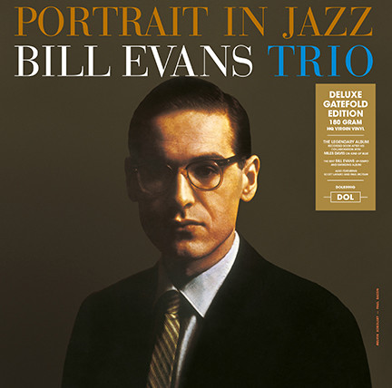
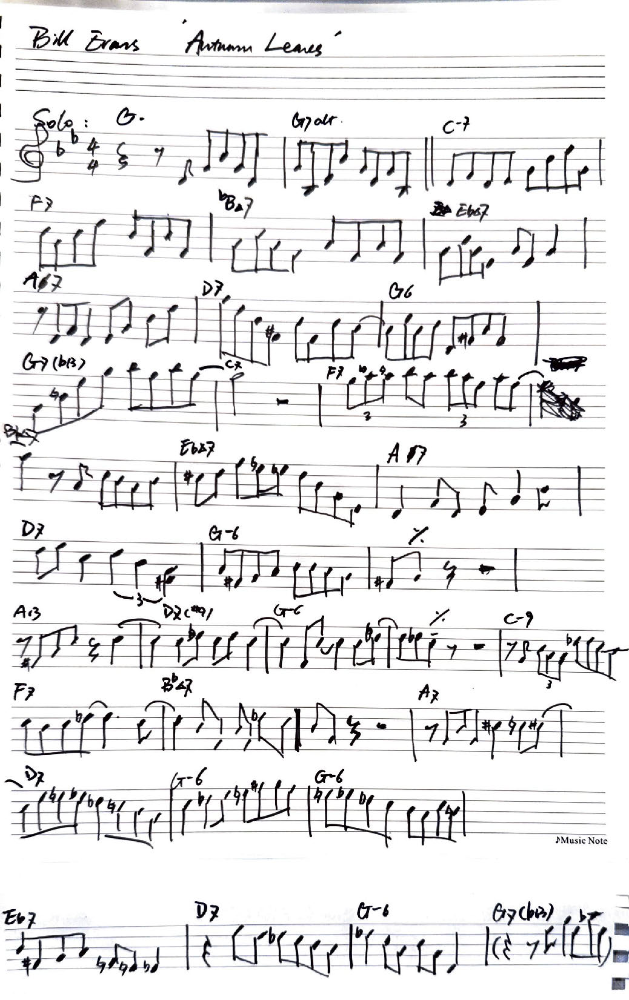

2025/02/07
Bill Evans' version of "Autumn Leaves" from Portrait in Jazz features a relaxed tempo with a flowing rhythm that emphasizes harmonic exploration. Known for his introspective style, Evans begins with a delicate piano introduction that sets a contemplative mood. His piano solos are deeply introspective and melodic, focusing on intricate harmonies and lyrical improvisation, allowing the emotional depth of the tune to shine through. The performance feels like a reflective journey, inviting the listener to get lost in the rich textures of Evans' harmonic world.